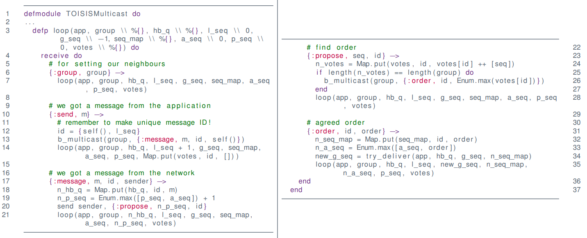

Multicast¶
A multicast is one-to-many communication between a single process and a specific group of processes such that all members of the group receive the message
Examples
- Algorithms with failover/replication/redundancy
- DNS
- Databases
- Caches
- Banks!
- One-to-many
- Streaming of TV/Radio
- Industrial Systems
- Many-to-many
- Skype
- Teams
- . . .
Big Question:
How do we guarantee that everyone gets the same information?
And what do we mean by same?
Assumptions
- We assume closed groups
- No communication from and to outside the group
- We assume static groups
- Nobody is joining group in the middle of transmission
- Not discussing multiple groups
- Problems if groups overlaps / shared members
IP Multicast¶
- Use IGMP (Internet Group Management Protocol)
- Get IP of group
- IPv4: 224.0.0.0 - 239.255.255.255 (-224.0.0.255 for permanent)
- IPv6: FF00::/8
- Build on UDP over IP
- Careful of firewalls/NAT
Hardware Support¶
Without hardware we have to send 3 messages
With hardware the router takes care of the message sending

With Hardware Support Example¶

Without Hardware Support Example¶

Problems¶
UDP has no guarantees
- No re-transmission
- no reception guaranteed
- one attempt only
- No ordering
- Messages are delivered in arbitrary order

UDP can drop packages:

Requirements¶
Assuming
- Reliable 1:1 communication
- Sender might crash
- If it crashes it stays dead
- No order
- Would work fine in asynchronous setting
Guarantee
- If a message is sent, it is delivered exactly once
- Messages are eventually delivered to non-crashed processes
Delivery¶
Basic Multicast¶


:send
- iterate through the group and send them the message
:message
- sends the message to the application
Sender can fail while sending messages to group
- If it crashes midway, some processes will not receive the message while others do
Reliable send => ACK implosion
- If a lot of processes send back acknowledgment, I "DDOS" myself
Reliable Multicast¶
Satisfy these 3 properties
- Integrity
- No "identity theft"
- implicit here
- Validity
- A process delivers to itself (or it crashes)
- Agreement
- All deliver or none deliver


b_multicast is the basic multipart algorithm from above
Everyone broadcasts the message in the "2nd round", but does not re-transmit if it comes from itself (26)
Integrity: Yes!
Validity: Yes!
Agreement: Yes!
1 multicast = O(N^2) packages in the network
UDP Fix: Steal ideas from TCP¶
- Use sequence numbers
- to detect duplicates
- to track lost messages
- Use "hold-back"-construction
- wait for re-transmission
- replication of messages
- Keep track of sequence numbers of others
- "gossip" sequence numbers
- whenever a process sends a message
- every process knows how many messages the other processes has sent
Hold-back Queue¶
The delivery queue is handled by Elixir in the code
- Keep messages that have a higher sequence number than R+1 where R is the latest message received
- It requests missing messages by sending negative acknowledgements
Reliable Multicast over IP¶
- Each process maintains sequence numbers
- S^p_g -- next message to be sent
- R^q_g (for all q \in g) -- latest message received from q
- On R-multicast of m to group g
- attach S^p_g and all pairs <q, R^q_g>
- R-deliver in process q happens iff S_m = R^p_g +1
- if $S_m < R^p_g +1 $ -- process q has seen the message before
- if S_m > R^p_g +1 or if R_m > R^p_g for some pair <q, R_m> in message -- a message has been lost

Data structures at process p:
- S_g^p -- sending sequence number
- R^{q}_{g} -- sequence number of the latest message p delivered from q (for each q)
On initialization:
- S_g^p = 0
- \bold R_g^q = -1 for all q \in g
For process p to R-multicast message m to group g
- IP-multicast (g, <m, S_g^p, <\bold R_g>>)
- S_g^p++
On IP-deliver (<m, S, <\bold R>>) at q from p
- save m
- if S = R_g^p + 1 then
- R-deliver(m)
- R_g^p ++
- check hold-back queue
- else if S > R_g^p + 1 then
- store m in hold-back queue
- request missing messages
- endif
- endif
- if \exists p.r_g^p \in \bold R and r_g^p > R_g^p then request missing messages -- endif
Elixir Code¶
1 2 3 4 5 6 7 8 9 10 11 12 13 14 15 16 17 18 19 20 21 22 23 24 25 26 27 28 29 30 31 32 33 34 35 36 37 38 39 40 41 42 43 44 45 46 47 48 49 50 51 52 53 | |
Integrity: Yes (IP also does checksum)
Validity: Yes
Agreement: ... eventually
Two problems (exercise)
No drops, good ordering = O(N) messages!
Ordered Multicast¶
FIFO Ordered
- Messages from p_n are received at p_k in order send by p_n
- Like speaking
Total ordered
- All messages are received in same order at p_n and p_k
Casually Ordered
- if p_n receives m_1 before m_2, then m_1 happened before m_2
Examples¶
Imagine a bank.
Can lead to wrong states

Use FIFO to fix this problem

If we introduce another process, it can fail again

Introduces total order
Total order can also go wrong

Reliable IP-Multicast is FIFO
- We respect sequence numbers of sender!
Totally Ordered Multicast¶
Idea
- do as FIFO but only one sequence number
- each message has a unique id/hash
- agree globally on "next" message
- use global sequencer or
- use negotiation (ISIS)
Sequencer¶
1 2 3 4 5 6 7 8 9 10 11 12 13 14 15 16 17 18 19 20 21 22 23 24 25 26 27 28 29 30 31 32 33 34 35 36 37 38 39 40 41 42 43 44 45 46 47 48 49 50 51 52 53 54 | |
Problems
- Sequencer is bottleneck
- Single point of failure
Bonus
-
What breaks w. IP-multicast instead of B-multicast?
-
Package loss = deadlock of process
- Solution: reliable underlying multicast
ISIS¶
Idea: Negotiate next ID
- Process p broadcasts message m
- Every other process q responds to p with proposal
- p picks largest proposed value, broadcasts
The trick:
- Track "largest proposed value" and "largest agreed value" at each process

Good:
- Reliable crash-detection = robust
- Sequence numbers are monotonically increasing
- Nobody will deliver "early"
Bad
- every broadcast requires negotiation (3 rounds)
- sequencer has 2 rounds
Casually Ordered Multicast¶
Idea
- order events by happened-before relationship
- use "vectored and quircky" lamport-clocks (Vector Clocks)
- track only "send" as an event
Vector Clocks¶

Not-quite-Lamport clocks, and they are vectors
- keep track of "last known time" of other processes
- "gossip" about "last known time" during communication
Let V_i be the vector of process p_i \in \{p_0, \dots, p_n\} then
- initially V_i[j] = 0 for all j \in 0\dots n,
- before event V_i'[i] = V_i'[i] +1,
- attach V to any message sent,
- on receive of V' we let V''[j] = \max(V[j], V'[i]) for j \in 0 \dots n
Given two vectors V and W,
- V=W if all values match
- for all j \in 0...n,\quad V[j] = W[j]
- V \leq W if all values in V are less than or equal those in W,
- for all j \in 0...n,\quad V[j] \leq W[j]
- V \leq W if all values in V are less than or equal to W and W \neq V
- V \leq W and V \neq W
Example
Algorithm¶

Notice
- Casual order implies FIFO
- Casual order does not imply Total
- Good: No extra communication for order!
- Can be combined with total
- Reliable if using R-multicast instead of B-multicast